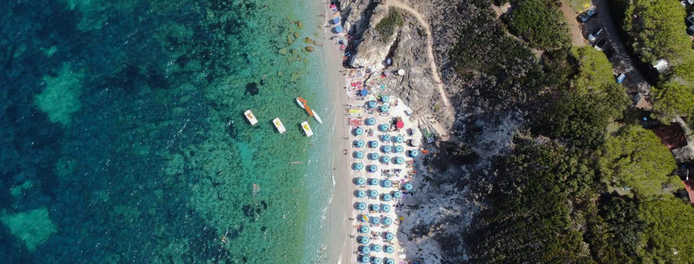
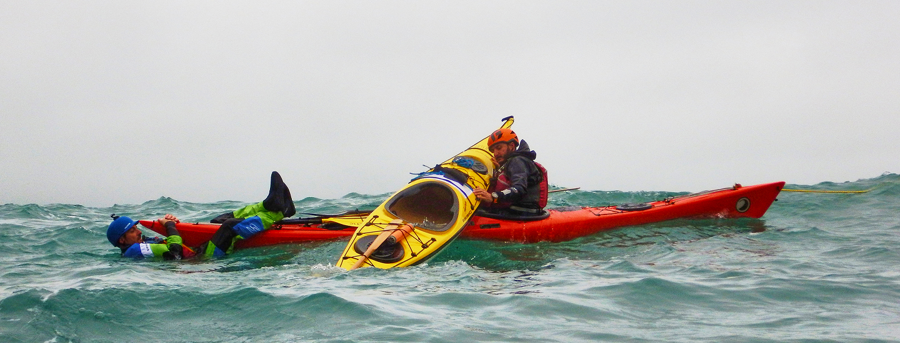
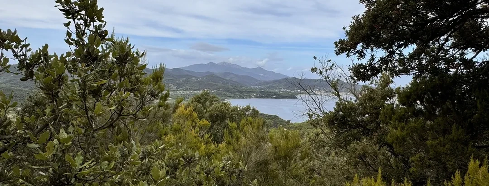
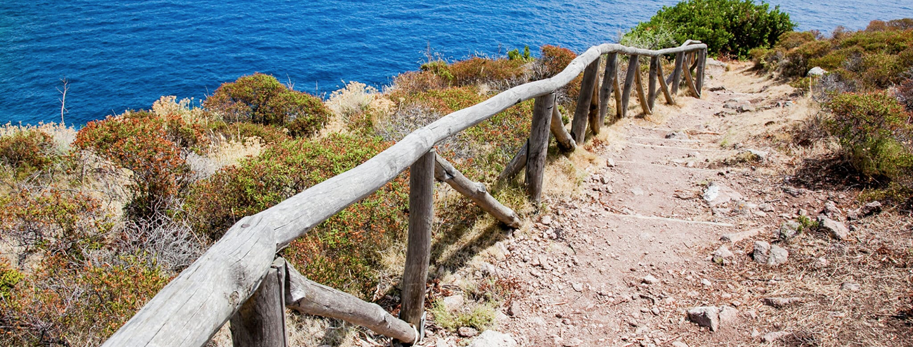

Parco Nazionale
dell’Arcipelago Toscano
"Sette isole incastonate nel blu del Mediterraneo, un viaggio tra costa, cultura e
natura protetta."
Il Parco Nazionale dell’Arcipelago Toscano è un’area protetta che comprende le sette isole maggiori
dell’arcipelago (Elba, Giglio, Capraia, Montecristo, Pianosa, Giannutri e Gorgona), oltre a numerosi
isolotti minori e tratti di mare circostanti.
Istituito nel 1996, rappresenta il più grande parco marino d’Europa e una delle realtà naturali più preziose
dell’intero bacino del Mediterraneo.
Questa porzione di mare racchiude ecosistemi costieri e terrestri di grande varietà: spiagge sabbiose,
scogliere a picco, macchia mediterranea, pinete e fondali che pullulano di vita.
Il fascino del Parco risiede anche nella compresenza di elementi storici e culturali che, nel corso dei
secoli, hanno segnato la vita di queste isole, rendendole scrigni di biodiversità e di tradizioni
millenarie.


Il Parco dell’Etna si estende intorno al vulcano attivo più alto d’Europa, che domina l’orizzonte della
Sicilia orientale con i suoi oltre 3.300 metri di altezza.
I Crateri Silvestri, situati a circa 1.900 metri di altitudine, offrono una versione più accessibile del
paesaggio vulcanico, consentendo anche a chi non ha grande esperienza di trekking di passeggiare lungo i
loro bordi e osservare la morfologia creata dalle eruzioni.
Un altro punto di interesse è la Valle del Bove, un’immensa caldera che rappresenta uno degli anfiteatri
naturali più grandi e spettacolari di tutto l’arco mediterraneo: le sue pareti ripide e le colate laviche
sovrapposte raccontano millenni di storia geologica.

Attività specifiche
Le attività preferite dai visitatori del Parco Nazionale dell’Arcipelago Toscano includono lo snorkeling e
le immersioni subacquee: i fondali ospitano praterie di posidonia, coralli e una straordinaria varietà di
pesci, molluschi e crostacei.
È possibile anche fare escursioni in barca, sia per raggiungere calette nascoste sia per osservare delfini e
balenottere che talvolta transitano in queste acque.
A terra, chi ama il trekking trova numerosi percorsi ben segnalati: l’anello occidentale dell’Elba, i
sentieri panoramici del Giglio e le mulattiere di Capraia rappresentano ottimi esempi di itinerari che
uniscono natura e storia.
Numerose anche le opportunità di praticare sport acquatici, come windsurf, kayak e vela, che consentono di
apprezzare appieno la bellezza del mare toscano.
Le isole, inoltre, offrono la possibilità di scoprire borghi pittoreschi e di partecipare alle sagre locali,
dove assaporare la cucina del territorio: dai piatti a base di pesce fresco fino ai vini DOC dell’Elba, la
gastronomia dell’arcipelago riflette l’incontro tra mare e terra.
Si possono anche organizzare visite guidate a tema geologico, con esperti che spiegano le particolari
formazioni rocciose e vulcaniche, testimoni della complessa storia geologica del Mar Tirreno.

Flora e fauna
La macchia mediterranea domina molti tratti costieri, con arbusti di rosmarino, ginepro, lentisco e
corbezzolo.
Nei versanti più umidi trovano spazio lecci e pini, mentre le zone più elevate dell’Elba ospitano
castagneti.
Per quanto riguarda la fauna, è possibile osservare mufloni, cinghiali e varie specie di uccelli migratori
che utilizzano le isole come tappa durante i loro spostamenti.
Sulle scogliere nidificano il falco pellegrino e il gabbiano corso, specie protetta.
I fondali, ricchi di grotte e secche, costituiscono il regno di cernie, saraghi, polpi e aragoste, oltre a
stelle marine di ogni forma e colore.
Grazie ai programmi di conservazione messi in atto dal Parco, molte specie a rischio hanno trovato qui un
rifugio sicuro e la loro popolazione sta gradualmente riprendendo vigore.
È importante ricordare che, in determinate aree marine protette, la pesca è regolamentata per preservare gli
equilibri dell’ecosistema.

Informazioni utili
Prima di visitare il Parco, è utile consultare il sito ufficiale o i Centri Visita per conoscere le regole
di accesso a ogni isola: alcune, come Montecristo e Pianosa, hanno restrizioni più severe per proteggere
l’integrità degli ecosistemi.
Sull’Elba, che è la più turistica, si trovano numerose strutture ricettive, campeggi e alberghi, mentre le
altre isole offrono alloggi e servizi in modo più limitato.
Gli spostamenti fra le isole principali sono garantiti da traghetti e aliscafi in partenza dai porti della
Toscana (Piombino, Livorno e Porto Santo Stefano), ma l’orario delle corse varia a seconda della stagione.
È importante rispettare i regolamenti di pesca e di immersione stabiliti dal Parco, nonché evitare di
lasciare rifiuti o danneggiare la vegetazione.
Le visite guidate rappresentano un ottimo modo per approfondire la conoscenza degli ecosistemi e scoprire
aspetti meno noti della storia locale.
Con la dovuta attenzione e un pizzico di spirito di avventura, l’Arcipelago Toscano offre esperienze
indimenticabili tra mare e terra, in un susseguirsi di panorami e profumi tipicamente mediterranei,
arricchiti da un patrimonio culturale che affonda le radici nell’epoca etrusca e continua a vivere in ogni
sagra di paese, in ogni borgo marinaro e in ogni sentiero in cui riecheggiano antiche leggende e storie di
naviganti.
La tutela di questo patrimonio naturale è fondamentale per garantire alle generazioni future la possibilità
di ammirare la fusione armoniosa tra paesaggio e tradizione, che rende le isole toscane un esempio virtuoso
di gestione ambientale e culturale.